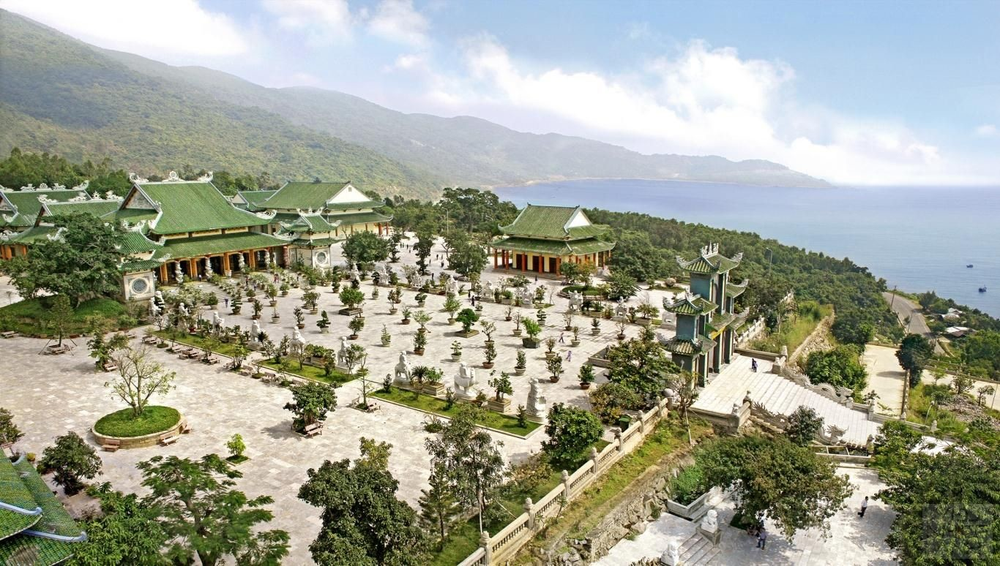
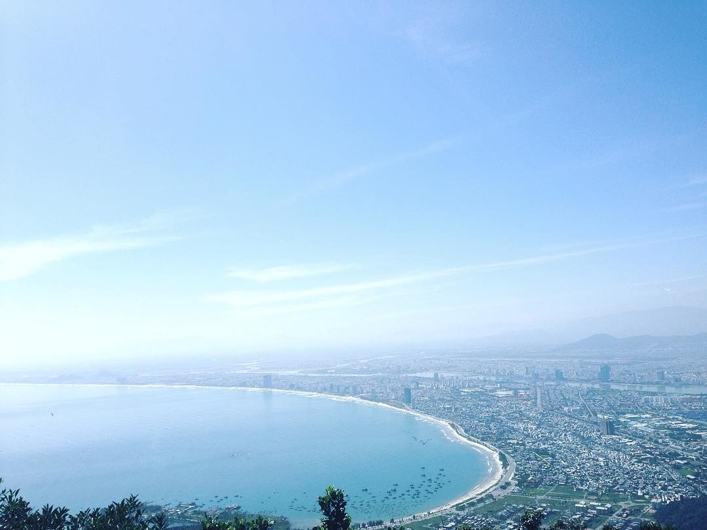

Chùa Linh Ứng Bãi Bụt là một trong ba ngôi chùa Linh Ứng linh thiêng của thành phố Đà Nẵng, đồng thời là địa điểm du lịch ở Đà Nẵng nổi tiếng nhất. Chùa tọa lạc trên một vị trí rất đẹp với lưng tựa núi Sơn Trà, mặt hướng về biển lớn. Bên cạnh một hệ thống các công trình kiến trúc đồ sộ, Chùa Linh Ứng Bãi Bụt còn có một pho tượng Phật Quan Thế Âm Bồ Tát cao nhất Việt Nam.
Tượng cao 67m, màu trắng với tư thế đứng mặt hướng biển, một tay cầm lọ nước cam lộ, một tay bắt ấn tam muội; mang ý nghĩa bảo vệ và phù hộ cho các ngư dân được an bình, thuận buồm xuôi gió.

Toàn cảnh Chùa Linh Ứng Bãi Bụt từ trên cao
Cây đa ngàn năm
Cây đa ngàn năm nằm ở phía bắc Bán đảo Sơn Trà. Theo các nhà nghiên cứu, cây đa này đã tồn tại hơn một ngàn năm. Hiện nay, cây cao khoảng hơn 26m, tán lá xum xuê. Dưới gốc cây đa có đến 26 rễ phụ đâm xuống mặt đất, tỏa khắp xung quanh, tạo nên một sự kết nối và khung sườn vững chắc cho cây.
Cây xuất hiện ở Sơn Trà từ rất lâu đời nên được người dân Sơn Trà tôn xưng là “già làng của núi rừng”. Cây còn gắn với một truyền thuyết kỳ bí. Chuyện kể rằng xưa kia, nơi đây thường được những vị tiên trên trời chọn là điểm tụ họp, vui chơi mỗi khi xuống trần gian. Họ yêu quý cây đa nên đã ban cho cây một hình dáng kỳ vĩ, vẻ đẹp hiếm có cùng tuổi thọ ngàn năm.
Đỉnh Bàn Cờ
Đỉnh Bàn Cờ là một trong số ít nơi có thể chiêm ngưỡng hình ảnh Bán đảo Sơn Trà Đà Nẵng , cũng như toàn cảnh thành phố Đà Nẵng đẹp nhất từ trên cao. Đỉnh Bàn Cờ nằm trên đỉnh của núi Sơn Trà, cao 700m so với mực nước biển. Từ Đỉnh Bàn Cờ, du khách có thể phóng tầm mắt ngắm trọn cả vùng vịnh Đà Nẵng tuyệt đẹp.
Sở dĩ mang tên gọi là Đỉnh Bàn Cờ vì tại đây có một bức tượng tiên ông đang ngồi trầm tư, suy nghĩ giải nước cờ. Đỉnh Bàn Cờ vốn gắn liền với một truyền thuyết kể về hai tiên ông đánh cờ. Để biết rõ hơn về truyền thuyết này cũng như kinh nghiệm du lịch Đỉnh Bàn Cờ, mời du khách xem thêm qua bài viết Chia sẻ cẩm nang đi du lịch Đỉnh Bàn Cờ Đà Nẵng tiết kiệm.

Khung cảnh thành phố Đà Nẵng nhìn từ Đỉnh Bàn Cờ
Mắt thần Đông Dương
Mắt thần Đông Dương vốn là một trạm đặt đài rađa quan sát nằm trên Bán đảo Sơn Trà. Hoạt động của trạm rađa nhằm phục vụ nhiều lĩnh vực khác nhau như không quân, hải quân, hàng không dân dụng…
Trong đó, tập trung chủ yếu nhiệm vụ bảo vệ vùng trời của Tổ quốc Việt Nam từ khu vực từ Đồng Hới (tỉnh Quảng Bình) đến Buôn Ma Thuột. Do đây là khu vực quân sự nên du khách không thể lên đến tận đài rađa nhưng đoạn đường từ chân núi lên đài rađa có nhiều điểm dừng rất đẹp, lý tưởng để du khách ngắm cảnh cũng như chụp ảnh kỷ niệm.
Bãi Tiên Sa
Bãi Tiên Sa là một trong các bãi biển đẹp và hoang sơ nhất tại Bán đảo Sơn Trà . Theo truyền thuyết, xưa kia những nàng tiên ở trên trời, mỗi khi xuống trần gian thường đến bãi tiên sa để vui đùa. Từ đó, người dân gọi bãi biển này là Bãi Tiên Sa. Bãi Tiên Sa nằm ở phía Bắc Bán đảo Sơn Trà.
Vì cả hai đầu của đều được che chắn bởi rừng cây và núi đá tự nhiên nên Tiên Sa là một bãi biển độc lập và tách biệt, sở hữu không gian yên tĩnh. Đến Tiên Sa, du khách có thể hòa mình trọn vẹn với thiên nhiên biển trời, có được khoảng thời gian nghỉ dưỡng thư thái và thoải mái nhất.
Để có được những trải nghiệm tuyệt nhất tại Bãi Tiên Sa cũng như hành trình khám phá du lịch Bán đảo Sơn Trà , du khách có thể tham gia các tour du lịch Đà Nẵng chất lượng cao. Những tour này có thiết kế chương trình rất hấp dẫn với nhiều hoạt động dã ngoại kỳ thú đan xen cùng vui chơi, nghỉ dưỡng.